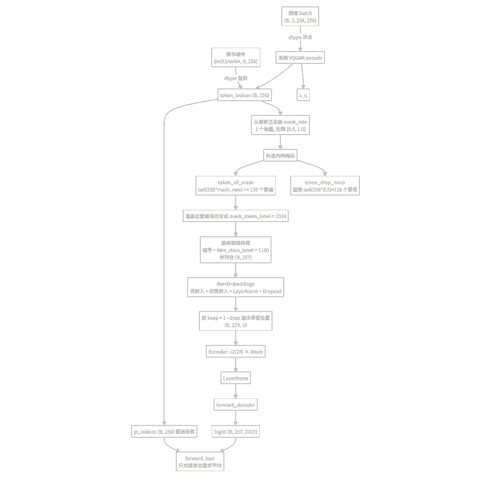
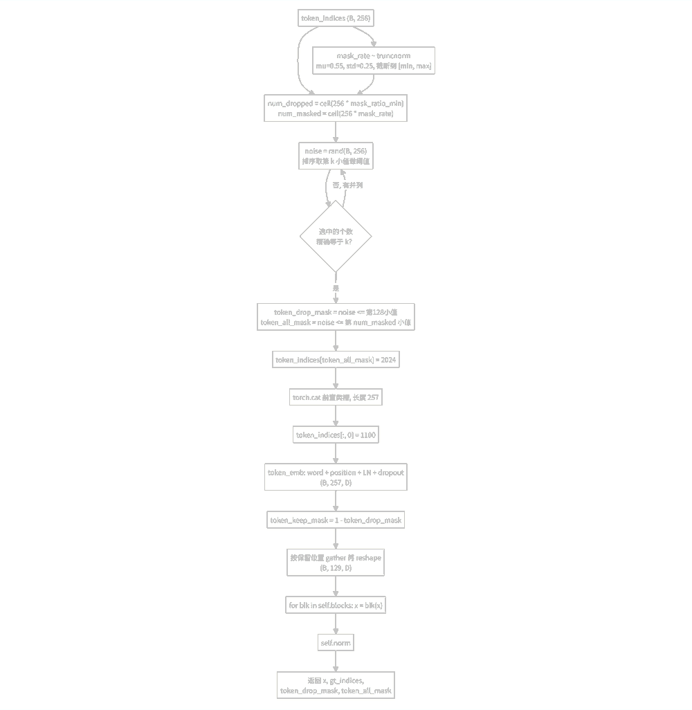
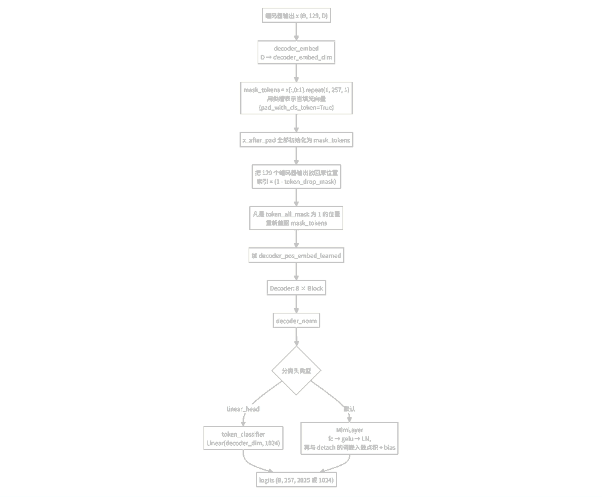
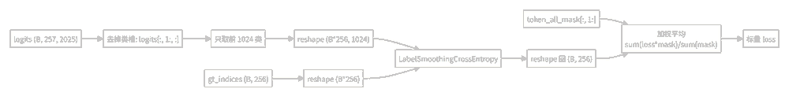
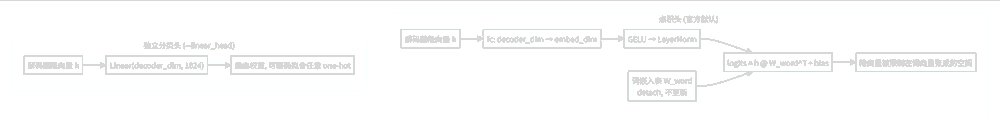
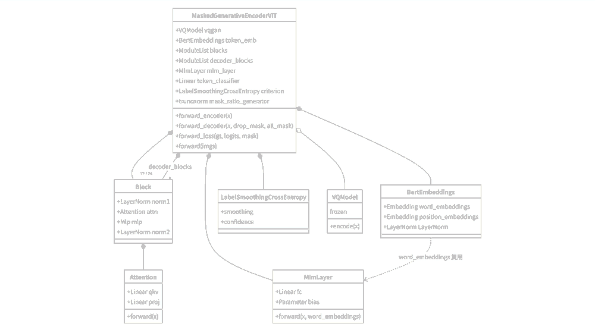
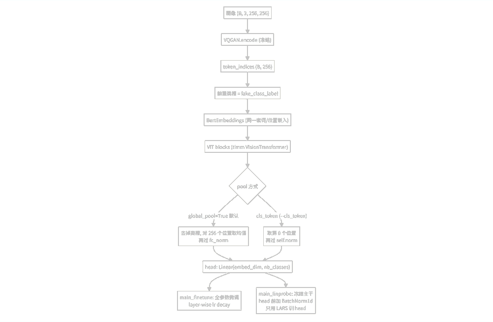
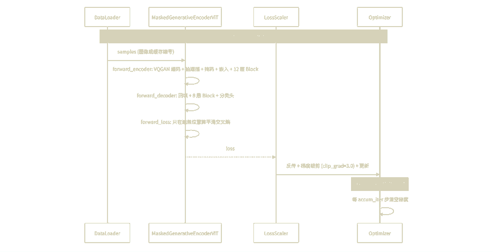

MAGE 源码逐读 · 第 1 篇 / 共 5 篇 · models_mage.py · 主模型 MAGE 主模型
逐行讲解代码文件：models_mage.py（MAGE 预训练与生成的核心模型） 仓库：LTH14/mage · 实验分支：001eander/MAGE_new | 生成日期：2026-09-29 | 256 个位置，16 × 16 露出 115，编码器看得到只被遮盖 13，仍进编码器被丢弃 128，编码器看不见示意：mask_rate = 0.55，丢弃数固定为 128 |
系列 5 篇 · 进度 | 01主模型 models_mage.py本篇 | 02下游分类 models_vit_mage.py待写 | 03预训练引擎 engine_pretrain.py待写 | 04微调与线性探测 engine_finetune.py待写 | 05入口脚本 main_*.py待写 |
章目 · 16 节 | 05 | LabelSmoothingCrossEntropy（72–87 行） |
| 06 | BertEmbeddings（90–124 行） |
| 07 | MlmLayer：点积分类头（127–143 行） |
| 08 | MaskedGenerativeEncoderViT.__init__（146–233 行） |
| 09 | initialize_weights / _init_weights（235–264 行） |
| 10 | forward_encoder（266–333 行） |
| 11 | forward_decoder（335–367 行） |
| 12 | forward_loss（369–375 行） |
代码保持原文换行，不加行号，避免与正文里的文件行号引用打架；超长行在代码块内部横向滚动，不做折行改写。 整张图先被冻结的 VQGAN 编码成 16×16=256 个编号，编号取值范围 0..1023。模型在这 256 个编号上做类似 BERT 的掩码预测：盖住一部分位置，让编码器只看剩下的一半，再让解码器把被盖住的位置猜回原来的编号。像素层面它一行都不碰，全部在编号空间里做。 图像→（VQGAN）→256 编号→随机遮盖→编码器→解码器→每个位置的 1024 类 logits→交叉熵 from timm.models.vision_transformer import PatchEmbed, DropPath, Mlp
from util.pos_embed import get_2d_sincos_pos_embed
from taming.models.vqgan import VQModel
from omegaconf import OmegaConf
import numpy as np
import scipy.stats as stats | 第 6 行从 timm 借了三个现成件：PatchEmbed（16×16 卷积切块）、DropPath（随机深度）、Mlp（Transformer 里的前馈层）。 |
| 第 8 行是正弦余弦位置编码，util/pos_embed.py 里生成。 |
| 第 10–11 行引入本地 VQGAN，配置用 OmegaConf 从 config/vqgan.yaml 读。 |
| 第 13 行 scipy.stats 用来抽截断正态的遮挡比例，这是 MAGE 相对 MAE 的关键变动之一。 |
| Python · Attention | 02 / 23 |
def __init__(self, dim, num_heads=8, qkv_bias=False, qk_scale=None, attn_drop=0., proj_drop=0.):
self.num_heads = num_heads
head_dim = dim // num_heads
self.scale = qk_scale or head_dim ** -0.5
self.qkv = nn.Linear(dim, dim * 3, bias=qkv_bias)
self.attn_drop = nn.Dropout(attn_drop)
self.proj = nn.Linear(dim, dim)
self.proj_drop = nn.Dropout(proj_drop) | 第 20 行每个头分到 dim/num_heads 维。 |
| 第 22 行缩放系数默认 1/sqrt(head_dim)，是标准注意力。 |
| 第 24 行用一个线性层一次性算出 Q、K、V，输出维度是 3*dim。 |
| Python · Attention | 03 / 23 |
def forward(self, x):
B, N, C = x.shape
qkv = self.qkv(x).reshape(B, N, 3, self.num_heads, C // self.num_heads).permute(2, 0, 3, 1, 4)
q, k, v = qkv[0], qkv[1], qkv[2]
with torch.cuda.amp.autocast(enabled=False):
attn = (q.float() @ k.float().transpose(-2, -1)) * self.scale
attn = attn - torch.max(attn, dim=-1, keepdim=True)[0]
attn = attn.softmax(dim=-1)
attn = self.attn_drop(attn)
x = (attn @ v).transpose(1, 2).reshape(B, N, C)
x = self.proj(x)
x = self.proj_drop(x)
return x, attn | 第 31 行把 (B,N,3C) 拆成 (3,B,heads,N,head_dim)，permute(2,0,3,1,4) 就是把 3 提到最前，方便按行取 q/k/v。 |
| 第 34–35 行是这段代码的特别之处：注意力分数强制用 float32 算，屏蔽掉 AMP 的半精度。这样做的原因是长序列加半精度时 q·k 容易溢出。 |
| 第 37 行先减去每行的最大值再 softmax。PyTorch 的 softmax 内部本来就减最大值，这里预减一次是为了让第 38 行的输入幅度更可控，配合半精度更安全。 |
| 第 41 行把各头拼回去，transpose(1,2) 把 heads 维和 N 维换回来，再 reshape 成 (B,N,C)。 |
| 返回的不只是结果，还有注意力矩阵 attn（第 44 行）。Block 里默认丢掉它，只有要可视化注意力时才取。 |
def __init__(self, dim, num_heads, mlp_ratio=4., qkv_bias=False, qk_scale=None,
drop=0., attn_drop=0., drop_path=0., act_layer=nn.GELU, norm_layer=nn.LayerNorm):
self.norm1 = norm_layer(dim)
self.attn = Attention(dim, num_heads=num_heads, qkv_bias=qkv_bias, qk_scale=qk_scale,
attn_drop=attn_drop, proj_drop=drop)
self.drop_path = DropPath(drop_path) if drop_path > 0. else nn.Identity()
self.norm2 = norm_layer(dim)
mlp_hidden_dim = int(dim * mlp_ratio)
self.mlp = Mlp(in_features=dim, hidden_features=mlp_hidden_dim, act_layer=act_layer, drop=drop)标准 pre-norm Transformer 块。norm1 在注意力前，norm2 在前馈前。drop_path 为 0 时退化成恒等映射（第 56 行）。 def forward(self, x, return_attention=False):
if return_attention:
_, attn = self.attn(self.norm1(x))
return attn
else:
y, _ = self.attn(self.norm1(x))
x = x + self.drop_path(y)
x = x + self.drop_path(self.mlp(self.norm2(x)))
return x | 第 62–64 行的分支只给可视化用：只跑注意力并把矩阵返回，不改 x。 |
| 第 66–68 行是残差结构：注意力输出加回 x，再过 MLP 加回 x。norm2 加在 MLP 前，而非残差相加之后。 |
| 05 | LabelSmoothingCrossEntropy72–87 行 |
| Python · LabelSmoothingCrossEntropy | 06 / 23 |
def forward(self, x, target):
logprobs = torch.nn.functional.log_softmax(x, dim=-1)
nll_loss = -logprobs.gather(dim=-1, index=target.unsqueeze(1))
nll_loss = nll_loss.squeeze(1)
smooth_loss = -logprobs.mean(dim=-1)
loss = self.confidence * nll_loss + self.smoothing * smooth_loss
return loss | 第 83–84 行取出正确答案那一列，取负号就是普通交叉熵。gather 配合 target.unsqueeze(1) 是为了按索引取值。 |
| 第 85 行 smooth_loss 是所有类别的平均负 log 概率，代表「均匀猜」的损失。 |
| 第 86 行按 1-smoothing 和 smoothing 加权混合。默认 smoothing=0.1，也就是把正确答案只看成 90% 置信。这就是 README 里反复提到的标签平滑，改 --label_smoothing 0 就退回精确交叉熵。 |
这是 MAGE 把图像编号当「词」喂给 Transformer 的入口。 | Python · BertEmbeddings | 07 / 23 |
def __init__(self, vocab_size, hidden_size, max_position_embeddings, dropout=0.1):
self.word_embeddings = nn.Embedding(vocab_size, hidden_size)
self.position_embeddings = nn.Embedding(max_position_embeddings, hidden_size)
self.LayerNorm = nn.LayerNorm(hidden_size, eps=1e-6)
self.dropout = nn.Dropout(dropout)
self.register_buffer("position_ids", torch.arange(max_position_embeddings).expand((1, -1)))
torch.nn.init.normal_(self.word_embeddings.weight, std=.02)
torch.nn.init.normal_(self.position_embeddings.weight, std=.02) | 第 95 行词嵌入表，行数就是词表大小（本文件里是 2025），列数是隐层维度。 |
| 第 96 行位置嵌入表，可学习，最多 257 个位置（256 个图块 + 1 个类槽）。 |
| 第 100 行 LayerNorm。第 103 行把位置 id 注册成 buffer，不受梯度影响、跟随模型到处走。 |
| 第 105–106 行把两张表都按 std=0.02 初始化。 |
| Python · BertEmbeddings | 08 / 23 |
def forward(self, input_ids):
input_shape = input_ids.size()
seq_length = input_shape[1]
position_ids = self.position_ids[:, :seq_length]
inputs_embeds = self.word_embeddings(input_ids)
position_embeddings = self.position_embeddings(position_ids)
embeddings = inputs_embeds + position_embeddings
embeddings = self.LayerNorm(embeddings)
embeddings = self.dropout(embeddings)
return embeddings | 第 117–120 行查表相加，词嵌入叠位置嵌入。 |
| 第 122–123 行归一化加 dropout。这里的位置信息是学出来的，和后面那个正弦余弦 pos_embed 是两码事，后者其实没被用到。 |
| Python · MlmLayer：点积分类头 | 09 / 23 |
def __init__(self, feat_emb_dim, word_emb_dim, vocab_size):
self.fc = nn.Linear(feat_emb_dim, word_emb_dim)
self.gelu = nn.GELU()
self.ln = nn.LayerNorm(word_emb_dim)
self.bias = nn.Parameter(torch.zeros(1, 1, vocab_size))
def forward(self, x, word_embeddings):
mlm_hidden = self.fc(x)
mlm_hidden = self.gelu(mlm_hidden)
mlm_hidden = self.ln(mlm_hidden)
word_embeddings = word_embeddings.transpose(0, 1)
logits = torch.matmul(mlm_hidden, word_embeddings)
logits = logits + self.bias
return logits这是 README 表格里那一列「点积」的官方实现。 | 第 137–139 行把解码器输出投影到词向量维度，过 GELU 再 LayerNorm。 |
| 第 140 行把词表转成 (word_emb_dim, vocab_size)，这里的 word_embeddings 是从外面传进来的、并且已经 detach（见第 363 行）。 |
| 第 141 行用点积得到每个词的分数。隐向量和词表向量做内积，谁方向最接近谁的分数就最高。 |
| 第 134/142 行是一个偏置项，初始化为 0，形状是每个词一个标量。 |
| 注 | 分类权重就是词嵌入表本身。隐向量被迫落在词向量张成的空间里，这正是 README 4.1 节说的「隐向量被限制在词向量空间」，也是「换相近小块」现象的机制来源。 |
| 08 | MaskedGenerativeEncoderViT.__init__146–233 行 |
构造函数比较长，拆开看。 VQGAN 部分 158–170 行| Python · MaskedGenerativeEncoderViT.__init__ | 10 / 23 |
config = OmegaConf.load('config/vqgan.yaml').model
self.vqgan = VQModel(ddconfig=config.params.ddconfig,
n_embed=config.params.n_embed,
embed_dim=config.params.embed_dim,
ckpt_path=vqgan_ckpt_path)
for param in self.vqgan.parameters():
param.requires_grad = False
self.codebook_size = config.params.n_embed
vocab_size = self.codebook_size + 1000 + 1
self.fake_class_label = self.codebook_size + 1100 - 1024
self.mask_token_label = vocab_size - 1 | 第 160–164 行读配置并实例化 VQGAN，权重从 vqgan_ckpt_path 加载。 |
| 第 165–166 行把 VQGAN 全部参数冻结。它只在训练里当编码器用，不参与更新。 |
| 第 168 行 codebook_size 就是词表大小 1024，也就是一张图的编号取值范围。 |
| 第 169 行 vocab_size = 1024 + 1000 + 1 = 2025。多出来的 1000 是给分类任务用的类别编号，最后 1 个是 mask 专用的编号。这说明 MAGE 是「生成 + 分类」的混合模型。 |
| 第 170 行 fake_class_label = 1024 + 1100 - 1024 = 1100。它是放在序列第 0 位的一个占位编号，用来当 BERT 里的 [CLS]。它的 id 落在类别编号区间里，和真实的 0..1023 编号不会撞车，它对应的那一行嵌入是可学习的。 |
| 第 171 行 mask_token_label = 2024，遮盖位置用它替换。 |
位置嵌入与遮挡分布 172–181 行| Python · MaskedGenerativeEncoderViT.__init__ | 11 / 23 |
self.token_emb = BertEmbeddings(vocab_size=vocab_size, hidden_size=embed_dim,
max_position_embeddings=256+1, dropout=0.1)
self.mask_ratio_min = mask_ratio_min
self.mask_ratio_generator = stats.truncnorm((mask_ratio_min - mask_ratio_mu) / mask_ratio_std,
(mask_ratio_max - mask_ratio_mu) / mask_ratio_std,
loc=mask_ratio_mu, scale=mask_ratio_std) | 第 172–175 行就是上面那个 BERT 嵌入，词表 2025，隐层 embed_dim，位置数 257。 |
| 第 179–181 行构造一个截断正态分布，取值被限制在 [mask_ratio_min, mask_ratio_max]。scipy 的 truncnorm 要求先把上下界标准化成 (a,b)，所以前面减均值除标准差。默认均值 0.55、标准差 0.25、下界 0.5、上界 1.0。每次前向会从这个分布抽一个标量当这次的遮挡比例。这是 MAGE 和 MAE（固定 75%）最大的不同，也是 README 4.4 节「0.5-1 对 0-1」要改的地方。 |
编码器 184–196 行| Python · MaskedGenerativeEncoderViT.__init__ | 12 / 23 |
dropout_rate = 0.1
self.patch_embed = PatchEmbed(img_size, patch_size, in_chans, embed_dim)
num_patches = self.patch_embed.num_patches
self.cls_token = nn.Parameter(torch.zeros(1, 1, embed_dim))
self.pos_embed = nn.Parameter(torch.zeros(1, num_patches + 1, embed_dim), requires_grad=False)
self.blocks = nn.ModuleList([
Block(embed_dim, num_heads, mlp_ratio, qkv_bias=True, qk_scale=None, norm_layer=norm_layer,
drop=dropout_rate, attn_drop=dropout_rate)
for i in range(depth)])
self.norm = norm_layer(embed_dim)敲黑板这里要敲黑板：patch_embed、pos_embed、和后面的 decoder_pos_embed 在真正的前向里几乎都不用。实际 token 序列来自 VQGAN 编号经 token_emb 得到的嵌入，位置信息也来自 token_emb 里可学习的位置表。它们是从 MAE 骨架继承下来的遗留结构，num_patches 只是拿来算 pos_embed 的形状用。读代码时不要被它们带偏。 | 第 192–195 行按 depth 堆编码器块，drop 和 attn_drop 都设成 0.1，qkv_bias=True。 |
解码器 200–215 行| Python · MaskedGenerativeEncoderViT.__init__ | 13 / 23 |
self.decoder_embed = nn.Linear(embed_dim, decoder_embed_dim, bias=True)
self.mask_token = nn.Parameter(torch.zeros(1, 1, decoder_embed_dim))
self.pad_with_cls_token = True
self.decoder_pos_embed = nn.Parameter(torch.zeros(1, num_patches + 1, decoder_embed_dim), requires_grad=False)
self.decoder_pos_embed_learned = nn.Parameter(torch.zeros(1, num_patches + 1, decoder_embed_dim))
self.decoder_blocks = nn.ModuleList([... for i in range(decoder_depth)])
self.decoder_norm = norm_layer(decoder_embed_dim)
self.decoder_pred = nn.Linear(decoder_embed_dim, patch_size**2 * in_chans, bias=True) | 第 203 行 mask_token 又是一个遗留参数，因为第 204 行 pad_with_cls_token = True，实际用的是类槽的表示来填充遮住的位置，这个 mask_token 不会被调用。 |
| 第 206–207 行两套位置嵌入，固定的那套没用，实际用第 207 行可学习的 decoder_pos_embed_learned。 |
| 第 215 行 decoder_pred 是把解码器输出变回像素块形状的分支，用来做 MAE 那种像素重建。MAGE 走的是编号分类，这条分支同样不参与前向，属于遗留。 |
分类头与损失 218–233 行| Python · MaskedGenerativeEncoderViT.__init__ | 14 / 23 |
self.linear_head = bool(linear_head)
if self.linear_head:
self.mlm_layer = None
self.token_classifier = nn.Linear(decoder_embed_dim, self.codebook_size)
else:
self.mlm_layer = MlmLayer(feat_emb_dim=decoder_embed_dim, word_emb_dim=embed_dim, vocab_size=vocab_size)
self.token_classifier = None
self.norm_pix_loss = norm_pix_loss
self.criterion = LabelSmoothingCrossEntropy(smoothing=label_smoothing)
self.initialize_weights() | 第 220–227 行是二选一。linear_head=True 时建一个自由的一层线性层直接映射到 1024 类；否则用上面的 MlmLayer 点积头。这对应 README 4.1 节表格里的两行，命令行开关就是 --linear_head。 |
| 第 231 行把平滑系数固定进损失函数，--label_smoothing 0.1/0 就在这里生效。 |
| 09 | initialize_weights 与 _init_weights235–264 行 |
| Python · initialize_weights 与 _init_weights | 15 / 23 |
pos_embed = get_2d_sincos_pos_embed(self.pos_embed.shape[-1], int(self.patch_embed.num_patches**.5), cls_token=True)
self.pos_embed.data.copy_(torch.from_numpy(pos_embed).float().unsqueeze(0))
decoder_pos_embed = get_2d_sincos_pos_embed(...)
self.decoder_pos_embed.data.copy_(torch.from_numpy(decoder_pos_embed).float().unsqueeze(0))
w = self.patch_embed.proj.weight.data
torch.nn.init.xavier_uniform_(w.view([w.shape[0], -1]))
torch.nn.init.normal_(self.cls_token, std=.02)
torch.nn.init.normal_(self.mask_token, std=.02)
torch.nn.init.normal_(self.decoder_pos_embed_learned, std=.02)
self.apply(self._init_weights) | 第 238–242 行填充两套固定正弦余弦位置嵌入。虽然前向没用到，还是要填，因为它们是参数、会被算进模型和保存进检查点。 |
| 第 245–246 行把 patch_embed 的卷积权重按线性层方式做 xavier 初始化。 |
| 第 248–251 行初始化几个零参数：cls_token、mask_token、可学习解码器位置嵌入，都用 std=0.02。 |
| 第 254 行 self.apply 遍历所有子模块，调用 _init_weights。 |
| Python · initialize_weights 与 _init_weights | 16 / 23 |
def _init_weights(self, m):
if isinstance(m, nn.Linear):
torch.nn.init.xavier_uniform_(m.weight)
if isinstance(m, nn.Linear) and m.bias is not None:
nn.init.constant_(m.bias, 0)
elif isinstance(m, nn.LayerNorm):
nn.init.constant_(m.bias, 0)
nn.init.constant_(m.weight, 1.0) | 这个函数只管 Linear 和 LayerNorm，nn.Embedding（词嵌入、位置嵌入）和 MlmLayer.bias 不在其中，它们保留各自在构造函数里的初始化。 |
这是全文件最需要慢慢读的地方。 输入分两种 267–281 行| Python · forward_encoder | 17 / 23 |
if x.dtype in (torch.int32, torch.int64):
token_indices = x.long()
if token_indices.dim() == 1:
token_indices = token_indices.unsqueeze(0)
token_indices = token_indices[:, :256].contiguous()
gt_indices = token_indices.clone()
device = token_indices.device
else:
with torch.no_grad():
z_q, _, token_tuple = self.vqgan.encode(x)
_, _, token_indices = token_tuple
token_indices = token_indices.reshape(z_q.size(0), -1)
gt_indices = token_indices.clone().detach().long()
device = x.device | 第 268 行判断输入是不是整数。是整数就表示这批数据已经是缓存好的编号，直接拿来用，省掉每步的 VQGAN 编码。对应 main_pretrain.py 里的 --cache_tokens。 |
| 第 273 行把编号复制一份当监督目标 gt_indices。 |
| 第 275–281 行是图像分支：VQGAN 前向拿 token_tuple，取第三个元素作为编号，reshape 成 (bsz, 256)，克隆并长期保存为标签。整个过程 no_grad，VQGAN 不产生梯度。 |
抽遮挡比例并造掩码 283–305 行| Python · forward_encoder | 18 / 23 |
bsz, seq_len = token_indices.size()
mask_ratio_min = self.mask_ratio_min
mask_rate = self.mask_ratio_generator.rvs(1)[0]
num_dropped_tokens = int(np.ceil(seq_len * mask_ratio_min))
num_masked_tokens = int(np.ceil(seq_len * mask_rate))
while True:
noise = torch.rand(bsz, seq_len, device=device)
sorted_noise, _ = torch.sort(noise, dim=1)
cutoff_drop = sorted_noise[:, num_dropped_tokens-1:num_dropped_tokens]
cutoff_mask = sorted_noise[:, num_masked_tokens-1:num_masked_tokens]
token_drop_mask = (noise <= cutoff_drop).float()
token_all_mask = (noise <= cutoff_mask).float()
if token_drop_mask.sum() == bsz*num_dropped_tokens and token_all_mask.sum() == bsz*num_masked_tokens:
break
else:
print("Rerandom the noise!")
token_indices[token_all_mask.nonzero(as_tuple=True)] = self.mask_token_label | 第 286 行从截断正态抽一个比例，这一批数据共用同一个 mask_rate。 |
| 第 288 行 num_dropped_tokens 用 mask_ratio_min 算，默认 ceil(256*0.5)=128。这是编码器固定要丢掉的数量。 |
| 第 289 行 num_masked_tokens 用抽到的比例算，标记为「用 mask 编号替换」的数量。 |
| 第 291–302 行用「随机数排序后取第 k 个」的办法精确定选出恰好 k 个位置。cutoff_drop 是第 128 小值，noise <= cutoff 刚好选中 128 个。 |
| while True 循环处理并列的问题：如果噪声里有相等的值，选中个数可能对不上，就重新抽。正常情况下几乎不会触发。 |
| 第 297 行 token_drop_mask 标记要从编码器输入里删掉的 128 个位置。 |
| 第 298 行 token_all_mask 标记要替换成 mask 编号的位置，数量至少 128，是它的超集。 |
| 第 304 行把 token_all_mask 为 1 的位置的编号改成 2024。此时改的是输入，gt_indices 还留着原始编号当答案。 |
拼类槽、嵌入、丢弃 307–333 行| Python · forward_encoder | 19 / 23 |
token_indices = torch.cat([torch.zeros(token_indices.size(0), 1, device=device), token_indices], dim=1)
token_indices[:, 0] = self.fake_class_label
token_drop_mask = torch.cat([torch.zeros(bsz, 1, device), token_drop_mask], dim=1)
token_all_mask = torch.cat([torch.zeros(bsz, 1, device), token_all_mask], dim=1)
token_indices = token_indices.long()
input_embeddings = self.token_emb(token_indices)
bsz, seq_len, emb_dim = input_embeddings.shape
token_keep_mask = 1 - token_drop_mask
input_embeddings_after_drop = input_embeddings[token_keep_mask.nonzero(as_tuple=True)].reshape(bsz, -1, emb_dim)
x = input_embeddings_after_drop
for blk in self.blocks:
x = blk(x)
x = self.norm(x)
return x, gt_indices, token_drop_mask, token_all_mask | 第 308–310 行在序列最前面插一个位置，编号设成 fake_class_label（1100），当类槽。 |
| 第 311–314 行给两个掩码也在前面补 0，长度对齐到 257。类槽永远不遮、永远不丢。 |
| 第 317 行走 BERT 嵌入，得到 (bsz, 257, embed_dim)。 |
| 第 322–323 行按 token_keep_mask 选出没被丢的嵌入，然后 reshape 回 (bsz, 257-128, emb_dim)，也就是 (bsz, 129, ...)。 |
| 第 327–330 行过 12 层编码器再归一化。 |
| 第 333 行返回四样：编码器输出、原始编号标签、丢弃掩码、全部掩码。 |
| 注 | 编码器看到的东西：类槽 + 128 个没被丢的 token。这 128 个里面，一部分是真实编号，一部分已经是 mask 编号（因为遮盖集合比丢弃集合大）。README 里「编码器固定丢掉 50% 的位置」说的就是这 128。 |
| Python · forward_decoder | 20 / 23 |
x = self.decoder_embed(x)
if self.pad_with_cls_token:
mask_tokens = x[:, 0:1].repeat(1, token_all_mask.shape[1], 1)
else:
mask_tokens = self.mask_token.repeat(token_all_mask.shape[0], token_all_mask.shape[1], 1)
x_after_pad = mask_tokens.clone()
x_after_pad[(1 - token_drop_mask).nonzero(as_tuple=True)] = x.reshape(x.shape[0] * x.shape[1], x.shape[2])
x_after_pad = torch.where(token_all_mask.unsqueeze(-1).bool(), mask_tokens, x_after_pad)
x = x_after_pad + self.decoder_pos_embed_learned
for blk in self.decoder_blocks:
x = blk(x)
x = self.decoder_norm(x)
if self.linear_head:
return self.token_classifier(x)
word_embeddings = self.token_emb.word_embeddings.weight.data.detach()
x = self.mlm_layer(x, word_embeddings)
return x | 第 337 行先把 129 个编码器输出映射到解码器维度。 |
| 第 340–341 行取类槽的表示 x[:,0:1]，重复 257 份当作「填充向量」。所有被遮住的位置都用它填。 |
| 第 347 行把编码器留下来的那 129 个输出放回它们原来的位置（1 - token_drop_mask 就是保留位置）。 |
| 第 349 行是关键第二步：凡是 token_all_mask 为 1 的位置，重新盖回填充向量。这处理的是「没被编码器丢掉、但属于遮盖集合」的那些位置。 |
| 第 352 行加上可学习的解码器位置嵌入，注意是 learned 那套。 |
| 第 360–361 行是独立分类头分支，直接线性映射到 1024 类。 |
| 第 363 行是点积头分支：取出词嵌入表的权重并 detach()，让梯度不从这里回流。 |
| Python · forward_loss | 21 / 23 |
bsz, seq_len = gt_indices.size()
loss = self.criterion(logits[:, 1:, :self.codebook_size].reshape(bsz*seq_len, -1), gt_indices.reshape(bsz*seq_len))
loss = loss.reshape(bsz, seq_len)
loss = (loss * mask[:, 1:]).sum() / mask[:, 1:].sum()
return loss | 第 372 行有三个切片动作要看清。logits[:, 1:, ...] 丢掉类槽位置；[..., :self.codebook_size] 只取前 1024 类，把类别编号和 mask 编号的 logits 扔掉，因为这里只做编号预测。然后 reshape 成 (bsz*256, 1024) 与标签对齐。 |
| 第 373 行把每个位置的损失还原成 (bsz, 256)。 |
| 第 374 行只对遮蔽位置求平均。mask[:, 1:] 对应去掉类槽后的 256 个位置。没被遮的位置不贡献损失。 |
def forward(self, imgs):
latent, gt_indices, token_drop_mask, token_all_mask = self.forward_encoder(imgs)
logits = self.forward_decoder(latent, token_drop_mask, token_all_mask)
loss = self.forward_loss(gt_indices, logits, token_all_mask)
return loss, imgs, token_all_mask把三步串起来，返回损失、原始输入、以及遮盖掩码。engine_pretrain.py 里只取第一个 loss，后两个留给需要可视化的调用方。 def mage_vit_base_patch16(**kwargs):
model = MaskedGenerativeEncoderViT(
patch_size=16, embed_dim=768, depth=12, num_heads=12,
decoder_embed_dim=768, decoder_depth=8, decoder_num_heads=16,
mlp_ratio=4, norm_layer=partial(nn.LayerNorm, eps=1e-6), **kwargs)
return model | Base 版：编码器 12 层、12 头、隐层 768；解码器 8 层、16 头、768 维。 |
| Large 版（392–397 行）：编码器 24 层、16 头、1024 维；解码器 8 层、16 头、1024 维。 |
| main_pretrain.py 第 235 行用 models_mage.__dict__[args.model](...) 按名字取函数，默认就是 mage_vit_large_patch16。 |
| 01 | 模型全程在编号空间工作，VQGAN 冻结，像素从来不进 Transformer。 |
| 02 | 词表 2025 = 1024 编号 + 1000 类别 + 1 mask，说明它同时兼容生成和分类。 |
| 03 | 遮挡比例每步从截断正态抽一个，mask_ratio_min 决定编码器固定丢多少（默认 128/256）。 |
| 04 | 分类头有两条路：点积（MlmLayer，权重就是词表）和独立线性层，对应 README 4.1 的两种组合。 |
| 05 | patch_embed、pos_embed、decoder_pos_embed、mask_token、decoder_pred 是从 MAE 继承的遗留结构，前向里不走。 |
1. 整体数据流（预训练） 图 1 · 预训练整体数据流 2. forward_encoder 内部 图 2 · forward_encoder 内部流程 3. forward_decoder 内部 图 3 · forward_decoder 内部流程 4. forward_loss（只监督遮盖位置） 图 4 · 损失只作用在被遮盖的位置 5. 两种分类头的对比 图 5 · 点积头与独立分类头 6. models_mage.py 的类结构 图 6 · 类结构与组合关系 7. 下游分类路径 图 7 · 微调与线性探测的下游路径 8. 一个预训练 step 的时序 图 8 · 预训练单步时序 9. 三个入口脚本的分工图中所有方框均由浏览器内的 mermaid 实时渲染。若在邮件客户端里看不到图，请把 HTML 下载后用浏览器打开。 |